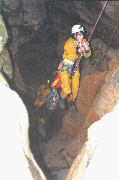
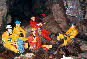
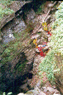

LUSS in Britain: Caving Photos
SLUGS archive
Photos
Events
Newsletters
Search
Marble Steps Pot
A busy day. Two groups down sidewinder and one already down the gully. About 30 people were beyond The Main Chamber so we called it a day. A SRT practice for some.
Becky ascending the entrance Gully

Becky a bit lower down

Us in the main chamber

Us packing up
Sandra near the bottom of the gully
LUSS@lancaster.ac.uk